week9 <<
Previous Next >> week10
week10-14
LINK
week10
week12
week13-14
week10-issue
本週開始進行協同倉儲，所有組員必須fork組長所創建的倉儲，並開始維護自身的分支及原先的網站.
Fork倉儲
正向pull request:無權組員修改過的檔案經由new pull request，向組長提出申請，經組長確認檔案無誤後進行衝突合併，若無權組員檔案版本過舊將在提出申請前即被擋下.
反向pull request:無權組員檔案版本過舊時，將new pull request反向回推至個人分支進行更新.更新也可透過(git pull "你fork的倉儲")
操作影片:
推送流程
git pull "fork倉儲網址">開啟近端修改其內容>關閉近端>git add .>git commit -m "修改版次">git push>到自身分支提交new pull request>待組審核後才會呈現在版面上.
soildworks/nx分析
3D曲線支援能力:支援3D曲線，2D/3D線各別獨立.
平面及軸向鎖定：按tab鍵可切換繪製平面簡單方便，直線可鎖定軸向.
鎖點能力：一般，很多情況下需要使用relation幫忙定位還好他提供直接在3D線模式下建立補助平面，算是就比較麻煩一點但還能接受.
3D曲線編輯
基本上SWX的曲線打上兩個端點之後產生的是一個3 dregree的曲線，含端點總共4個控制點，SWX曲線的handler可獨立調整切線方向或是切線延長切線影響範圍，在同類軟體裏面算是相當的好用的調整方式，同時也可以打開控制點的顯示，直接修改控制點的位置，缺點的話就是他的handler若只想針對單一平面調整會有些困難，經常可以看到一些示範影片中調整了上視圖的曲線之後側視圖的就跟著跑掉，一直來回調整，另外調整handler時經常造成閃退，以及handler經常無故消失無法操作是比較頭痛的問題，還有一點比較奇怪的是在開啟遠近透視的情況下，從上視圖拖曳點移動，會發現連垂直位置也受到影響.
曲面生成及修改
SWX的曲面生成介面非常好用，可任意不按順序修改構成曲線也可以選擇截斷曲面的位置，這點可大幅減少配合曲面截斷曲線的需要合併線段選擇能力：SWX的Selection Manager也是一個相當好用的功能可以選擇合併不同線段來構成曲面，也是其它軟體比較缺乏的設計，但他的Selectin Manager操作上還是略嫌煩瑣就是。
連續曲率能力(G1/G2/G3..等)
基本上都可支援到G2
– 特有建模方式：應該沒有
– 分析工具
Curvature/Zebra都相當方便易用.
顯示能力
曲面反射顯示：開啟顯卡Realview功能後可直接在視圖顯示反射，速度上還算不錯，相當的實用。但缺點是即使作適當調整後仍稍有些過曝感覺.
即時視圖渲染：即時視圖不支援ray tracing，不過其實也不太需要就是.
操作介面
指令圖示：功能清楚，安排容易上手.
分割視圖：可切換分割.
快速視角切換：沒有切換視角的小方塊，需要用工具列切換比較不直覺
平移旋轉操作：中鍵旋轉，似乎無法自定右鍵功能.
執行順暢度
硬體需求：繪圖時CPU佔用比其它軟體來的高，隨便畫個曲線都能聽到CPU風扇起飛的聲音。
軟體穩定度：不佳，經常遇到閃退情況。
閃退時自動回復功能經常失效，或是乾脆完全都不作用，造成工作進度的損失。
奇怪的問題不少，使用上的體驗並不是很好。
優點
1. 硬體效能夠強，可以處理幾千件零組件的計算與畫面移動、旋轉等動作
2. 軟體能順暢處理大型組合件
3. 市購品廠商提供3D CAD模型
缺點:
機械設備的零組件少量多樣，不適合大量製造的製程，基本上都是以車、銑、鑽、磨為主，連放電跟線切割都要避免(成本考量)，形狀通常不會太過於複雜，少數會用到鑄造，形狀已經算比較複雜，包括必需考慮脫模角度，所以一般來說，設備零件考慮到加工製造的的成本效益很少會用到曲面。
相對消費性產品考慮量產與外觀，零件製造方法會以鈑金沖壓、塑膠射出為主，
需要公母模的布林計算、鈑金展開、沖壓模或射出模設計，這些都需要用到複雜的形狀與曲面能力，這也是ProE在主要市場消費性電子產品設計上，軟體功能強項發展多在複雜的零件形狀設計(曲面)，以提供外觀設計跟大量製造的模具所需；但是這些曲面、模具設計功能到了機械設計用途就變成一無是處。
常用軟件開發歷史
Pro / ENGINEER

SDRC

SolidWorks

NX

week12-issue
Batch Command
1.cad.bat - 啟動 wsgi.py 並且在瀏覽器開啟 https 9443 動態網頁.
|
1
2
3
4
|
@echo off
y:
cd tmp\cad2019\cmsimde
start python wsgi.py | start chrome https:
|
2.cadh.bat - 啟動 http-server 並且在瀏覽氣開啟 https 8444 靜態網頁.
|
1
2
3
4
|
@echo off
y:
cd tmp\cad2019\
start python http-server.py | start chrome https:
|
3.cadg.bat-近端倉儲維護告一段落後, 啟動 gitextensions 開啟 cad2019 倉儲時, 使用.
|
1
2
3
|
@echo off
y:
Y:\cad\201906_fall\data\GitExtensions\gitextensions.exe browse y:\tmp\cad2019\
|
[~複製貼上更改檔案位置即可,有時啟動需間隔一些時間~]
NX練習影片:
NX解說(第七章):
第7章-自由曲面建模:
要創建自由形式特徵，首先需要一組點，曲線，圖紙或實體的邊緣，面
片材或固體或其他物體。 以下各節介紹了一些您可以使用的方法
可以使用自由格式功能來創建模型。
7.1概述:
在NX 12中，“自由格式功能”選項位於菜單→插入→
表面/網格表面/掃掠/法蘭表面和菜單→編輯→表面更高級
操作。 您可以通過多種方式從現有的方式創建自由格式功能.
7.1.1從點創建自由特徵:
構建曲面(From Menu, click on Insert → Surface):
(圖一) 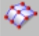(圖二) 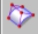(圖三)
1.Four Point Surface:如果有四個角點
2.Through Points:如果點形成矩形陣列
3.Through Points:如果定義的點形成矩形陣列
7.1.2從部分創建自由格式功能:
利用曲線和邊緣創建自由曲面(From Menu, click on Insert → Mesh Surface):
(圖一) (圖二) 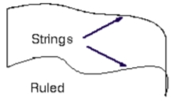 (圖三) 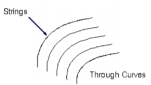 (圖四)
1.Ruled(圖一)：如果您有兩個大致相同的線平行(圖三)
2.Through Curves(圖二) ：如果大約三個或更多線平行(圖四)
若構造幾何包含兩個或多個線（曲線，面，邊線）以及彼此平行的一個或多個截面
垂直於第一組曲線（參考線）使用下列兩種方式.
(圖一) (圖二) 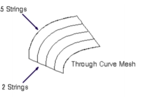 (圖三) 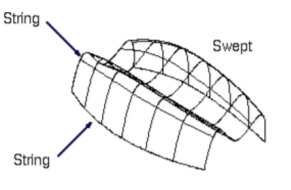(圖四)
1.Through Curve Mesh(圖一):如果至少有四個截面，則可使用.[弦在每個方向上都存在至少兩個弦（平行和垂直）](圖三)
2.Swept(圖二) :如果至少兩個部分線段大致相同，則可使用.[垂直（從菜單中，選擇插入→掃描）](圖四)
7.1.3從面孔創建自由特徵:
(圖一)  (圖二) 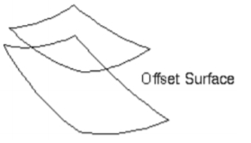 (圖三) 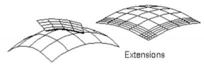 (圖四)
(圖二) 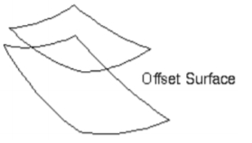 (圖三) 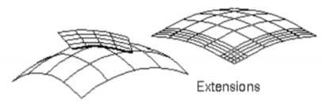 (圖四)
1.Offset Surface(圖一):如果要偏移的面（From Menu, click on Insert →Offset/Scale） (圖三)
2.Extension(圖二):如果您有3D曲線和邊緣曲線 （Click on the Insert →Flange Surface →Extension）(圖四)
7.2自由格式功能建模:
進行一些自由結構建模的練習(structured points, a point cloud, curves and faces)
7.2.1用點建模
1.打開文件freeform_thrupoints.prt➢右鍵單擊 Toolbars，並確保已選中“Surface Toolbar”
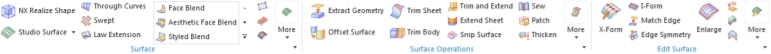
你會看到
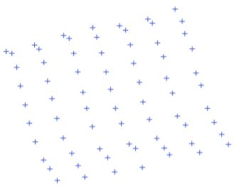
2.選擇 Insert →Surface →Through Points
3.單擊Toolbar圖標
4.對於補丁類型，選擇多個
➢對於封閉，選擇都不
➢對於行度和列度，輸入3。
➢點擊確定
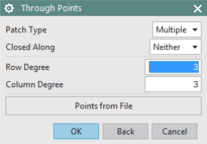
5.單擊全部鏈接
➢選擇頂部起點和底部終點
最左行的點，如下圖所示
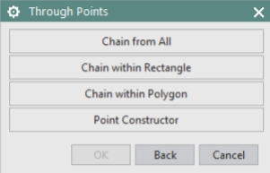
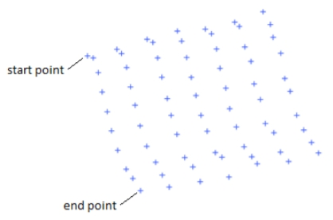
➢重複相同的步驟選擇前四行點之後，將彈出一個窗口(圖一)，詢問是否所有點
指定，或者如果您想指定另一行
➢選擇指定另一行，直到所有行都被指定的
➢指定所有行後，選擇“指定所有點”
➢單擊“通過點”窗口中的“取消”您將看到如下所示的表面(圖二)
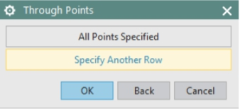(圖一)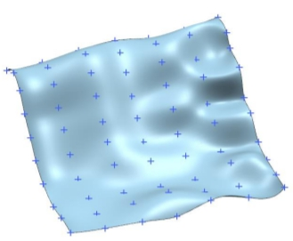(圖二)
7.2.2使用雲點建模
打開freeform_cloud.prt
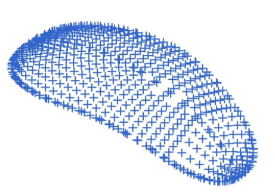
➢選擇“插入”→“曲面”→“擬合曲面”or➢單擊將出現以下介面
➢通過單擊屏幕上的所有點來選擇
雲點。
➢在“適合方向”下拉菜單中，選擇“最佳”適合於. 這匹配點雲坐標
系統與原始系統
➢將U和V度的默認值更改為3
➢點擊確定
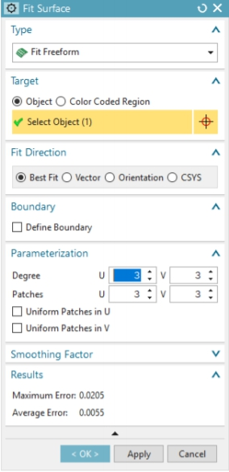
7.2.3使用曲線建模:
打開freeform_thrucurves_parameter.prt
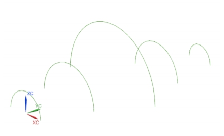
選擇“ Insert ”→“Mesh Surface”→“Through Curves”
or
➢單擊
➢選擇第一部分線段，如下所示。 確認選擇左側的某個位置弧線
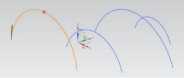
➢點擊鼠標中鍵MB2或單擊“添加新的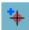”
or
➢單擊與第一個相似的下一條曲線，然後單擊
鼠標中鍵MB2。 你可以看到一個表面
如圖所示，在兩條曲線之間生成
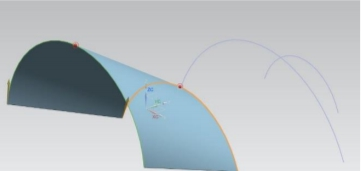
重複相同的步驟以選擇其餘線段。 記住點擊MB2（或添加新集）選擇每條曲線後。
➢對於對齊(Alignment)，選擇參數
➢對於補丁(Patch Type)，選擇單(Single)
➢對於施工(Construction)，選擇簡單(Simple)
選擇“簡單”選項後，系統會嘗試構建最簡單的表面，使貼劑的數量最少。
➢點擊確定
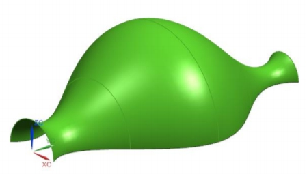
7.2.4使用曲線和面建模
➢打開freeform_thrucurves_faces.prt(曲線和面將顯示在右側)
➢選擇插入→網格表面→直通曲線(Through)
➢選擇頂面的邊1
➢選擇edge-2並單擊MB2
➢選擇邊3
➢在介面對齊下，取消選中“保留形狀”檢查框
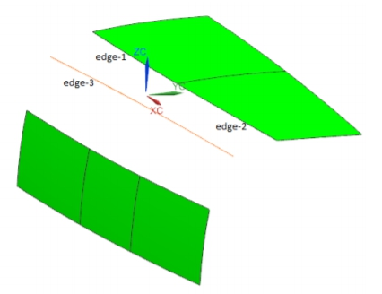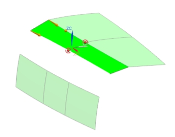
確保所有箭頭都指向同一方向（如果不是，請雙擊任一箭頭即可翻轉其方向）。
➢在對齊後於介面中選擇參數
➢在“連續性”介面的“第一部分”中，選擇“ G2（曲率）”選項，然後選擇頂面的兩個斑塊
➢點擊應用
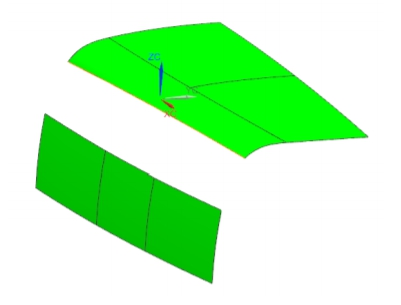
現在選擇edge-3，然後單擊MB2
➢選擇下平面的三個邊緣
➢在“第一部分”的“連續性”介面中將選項更改為G2（曲率）
➢選擇剛創建的表面，然後單擊MB2
➢對於最後一節的連續性，選擇G2（曲率），然後選擇底部三個補丁作為參考
➢單擊確定退出
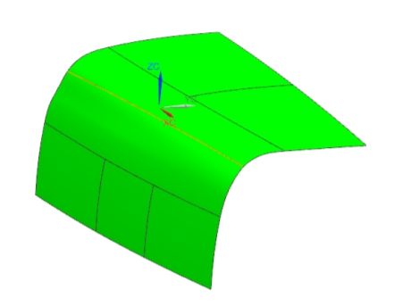
Webots Tutorial:
1.建立場景
2.設定場景參數
3.新增物件並設定物件參數,並複製三個
4.新增機器人並施加拉力測試
5.將程式導入機器人路徑
6.完成
Vrep Tutorial:
week13-14
第13周以前的內容報告:
Webots及Vrep之介紹:
Webots

Webots是移動式機器人建模、程式撰寫與模擬軟體，內建機器人資料庫，可將控制程式傳送至多種真實的機器人，可定義完整的移動機器人模擬，包含模型性質，如形狀、質量、摩擦力等，以及多個感測器與致動器。以內建IDE撰寫控制程式與環境、軟體模擬，並由程式控制真實機器人。
Vrep
![[連載0]Vrep入門介紹](https://pic2.zhimg.com/v2-115fc76be5f99897f64919bdbb6a7ebd_1200x500.jpg)
Vrep是一款動力學模擬軟體，主要定位於機器人模擬建模領域，可以利用內嵌腳本、ROS節點、遠程API客戶端等實現分散式的控制結構，是非常理想的機器人模擬建模的工具。控制器可以採用C/C++, Python, Java, Lua, Matlab, Octave or Urbi等語言實現。
webots all tutorial :
tutorial1:
1.建立場景
2.設定場景參數
3.新增物件並設定物件參數,並複製三個
4.新增機器人並施加拉力測試
5.將程式導入機器人路徑
tutorial2:
1.刪去原有場景
2.在children中新增一個形狀節點，形狀幾何中新增球形節點
3.形狀外觀中新增幾何圖形節點並設定屬性、粗糙度及跟改顏色
4.實體邊界中新增形狀節點，形狀幾何中新增箱型節點
5.設定參數
tutorial3:
1.修改牆壁的外觀，在第一面牆的Appearance中的baseColor改成藍色，設定參數
2.將球體新增紋路
3.ImageTexture的url>WEBOTS_HOME / projects / default / worlds / textures / red_brick_wall.jpg 路徑下的圖片
tutorial4:
1.理解機器人路徑程式的編輯模式後,將路徑程式做更改
2.新增一個控制程式碼檔案，並命名為e-puck_avoid_collision，自動迴避程式碼加入
3.機器人將自動迴避障礙物
tutorial5:
1.將所有物件刪除只留場景
2.新增啞鈴，新增Solid，在Shape中的geometry新增cylinder，並將height改為0.1及radius改為0.01
3.在Transform中的children新增Shape，並在底下的geometry新增Sphere，然後將底下的radius改為0.03，並設定位置參數
4.調整啞鈴位置，將rotation中的數值改為(1,0,0,1.5708)，且translation Y軸改為0.03
tutorial6:
week9 <<
Previous Next >> week10